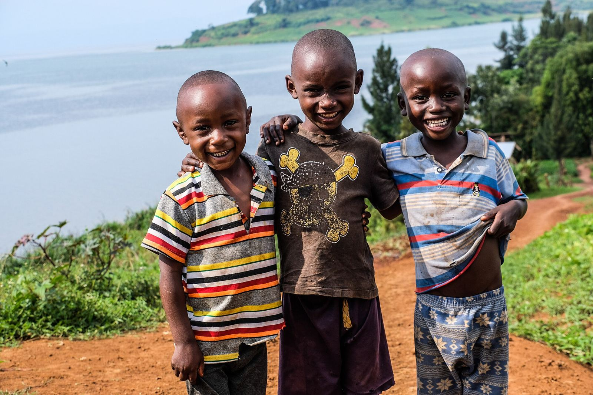
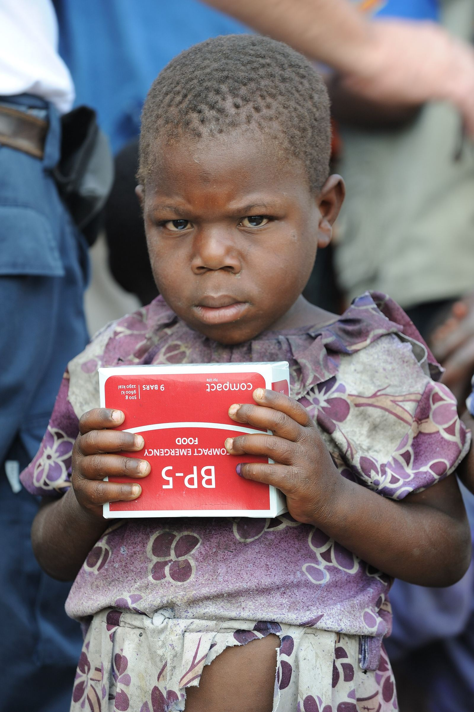

Aide d'urgence
Aide d'urgence
Kits essentiels pour les familles déplacées
Abris, vivres, kits d'hygiène et articles ménagers pour les familles arrivées dans les sites de déplacement.
Collecté 36 000 $Objectif 50 000 $
72 %Soutenir
Organisation internationale à base de foi chrétienne, nous accompagnons les communautés vulnérables de la RD Congo vers la guérison, la résilience et un développement durable.

Nous savons que vous voulez savoir comment votre don est utilisé. C'est pourquoi nous rendons compte de chaque action : familles secourues, enfants scolarisés, survivants accompagnés, leaders formés.
Cinq piliers complémentaires pour répondre à l'urgence, soigner les blessures invisibles et bâtir des communautés autonomes.
Assistance humanitaire aux déplacés internes et personnes vulnérables pour leurs besoins immédiats.
En savoir plus 02 MHPSSBien-être mental, émotionnel et social des personnes affectées par les crises et la violence.
En savoir plus 03 LeadershipFormer des leaders chrétiens intègres et visionnaires, au style de leadership serviteur.
En savoir plus 04 LivelihoodsRelèvement communautaire, moyens de subsistance et formation professionnelle.
En savoir plus 05 EducationGarantir aux enfants affectés par les crises l'accès à un apprentissage sûr et de qualité.
En savoir plus
AFSRDC accompagne les communautés chrétiennes vulnérables et leurs communautés immédiates vers la guérison, la résilience et un développement durable.
Aide d'urgence
Abris, vivres, kits d'hygiène et articles ménagers pour les familles arrivées dans les sites de déplacement.
 Santé mentale
Santé mentale
Écoute, groupes de parole et accompagnement psycho-spirituel pour les femmes affectées par les violences.
 Éducation
Éducation
Frais scolaires, fournitures et classes de rattrapage pour les enfants dont la scolarité a été interrompue.
Notre action est enracinée dans la foi et tournée vers la dignité de chaque personne.
Voir des hommes et des femmes restaurés, fortifiés dans leur foi, résilients, pleins de ressources, transformant leur communauté immédiate, témoins de l'amour du Christ.
Manifester l'amour du Christ en accompagnant les communautés chrétiennes vulnérables et leurs communautés immédiates vers la guérison, la résilience et un développement durable.
Restaurer l'espérance, renforcer les capacités locales et créer des conditions favorables à une vie épanouie spirituellement, socialement et économiquement.

Après avoir fui Rutshuru, il a appris la couture grâce à notre programme. Aujourd'hui, il forme à son tour six jeunes de son quartier.



Quand tout s'est effondré, ils ne nous ont pas seulement donné de la nourriture. Ils nous ont rendu la dignité et le courage de recommencer.Maman Furaha · bénéficiaire, site de déplacés de Bulengo
Donner, prier, s'engager comme bénévole ou devenir partenaire : chaque geste compte pour transformer une communauté.